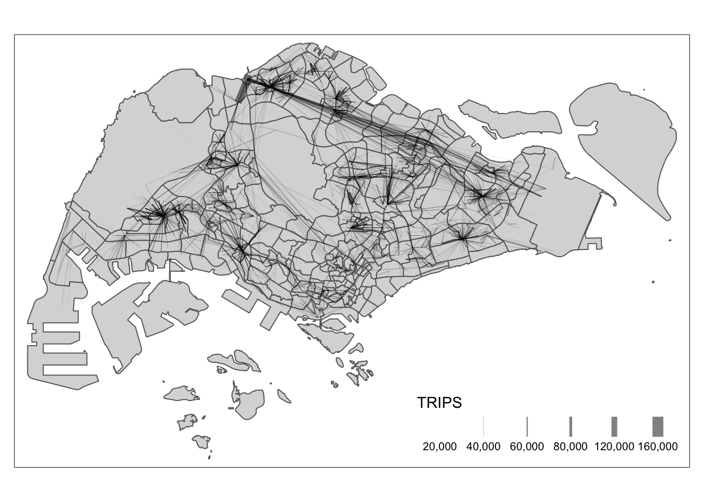

Code
pacman::p_load(sf, spdep, tmap, tidyverse, sfdep, stplanr)What are the driving forces behind urban dwellers to weak up early in morning to commute from their home locations to their work places? What are the impact of removing a public bus service on the commuters reside along the corridor of the bus route? These and many other questions related to urban mobility are challenges faced by transport operators and urban managers.
To provide answer to this question, traditionally, commuters survey will be used. However, commuters survey is a very costly, time-consuming and laborous, not to mention that the survey data tend to take a long time to clean and analyse. As a result, it is not unusual, by the time the survey report was ready, most of the information already out-of-date!
As city-wide urban infrastructures such as public buses, mass rapid transits, public utilities and roads become digital, the data sets obtained can be used as a framework for tracking movement patterns through space and time. This is particularly true with the recent trend of massive deployment of pervasive computing technologies such as GPS on the vehicles and SMART cards used by public transport commuters.
Unfortunately, this explosive growth of geospatially-referenced data has far outpaced the planner’s ability to utilize and transform the data into insightful information thus creating an adverse impact on the return on the investment made to collect and manage this data.
This take-home exercise is motivated by two main reasons. Firstly, despite increasing amounts of open data available for public consumption, there has not been significant practice research carried out to show how these disparate data sources can be integrated, analysed, and modelled to support policy making decisions.
Secondly, there is a general lack of practical research to show how geospatial data science and analysis (GDSA) can be used to support decision-making.
Hence, your task for this take-home exercise is to conduct a case study to demonstrate the potential value of GDSA to integrate publicly available data from multiple sources for building a spatial interaction models to determine factors affecting urban mobility patterns of public bus transit.
For the purpose of this assignment, data from several open government sources will be used:
Passenger Volume by Origin Destination Bus Stops, Bus Stop Location, Train Station and Train Station Exit Point, just to name a few of them, from LTA DataMall.
Master Plan 2019 Subzone Boundary, HDB Property Information, School Directory and Information and other relevant data from Data.gov.sg.
Those specially collected data aim to use within this excercise content only, if intend to put in other usage, approach course instructor Dr. Kam Tin Seong and ask for permission first.
For starting, load needing packages.
pacman::p_load(sf, spdep, tmap, tidyverse, sfdep, stplanr)Derive an analytical hexagon data of 325m (this distance is the perpendicular distance between the centre of the hexagon and its edges) to represent the traffic analysis zone (TAZ).
First of all, we need to import Bus Stop Location from LTA DataMall.
busstop = st_read(dsn = "./data/geospatial/BusStopLocation_Jul2023",
layer = "BusStop") %>% st_transform(crs = 3414) %>%
distinct(BUS_STOP_N, .keep_all = TRUE)Reading layer `BusStop' from data source
`/Users/SMU/liangyao2023/ISSS624/Takehome_Ex/Takehome_Ex02/data/geospatial/BusStopLocation_Jul2023'
using driver `ESRI Shapefile'
Simple feature collection with 5161 features and 3 fields
Geometry type: POINT
Dimension: XY
Bounding box: xmin: 3970.122 ymin: 26482.1 xmax: 48284.56 ymax: 52983.82
Projected CRS: SVY21Also import subzone geometry data as our background layer.
sz = st_read(dsn = "./data/geospatial",
layer = "MP14_SUBZONE_WEB_PL") %>% st_transform(crs = 3414) Reading layer `MP14_SUBZONE_WEB_PL' from data source
`/Users/SMU/liangyao2023/ISSS624/Takehome_Ex/Takehome_Ex02/data/geospatial'
using driver `ESRI Shapefile'
Simple feature collection with 323 features and 15 fields
Geometry type: MULTIPOLYGON
Dimension: XY
Bounding box: xmin: 2667.538 ymin: 15748.72 xmax: 56396.44 ymax: 50256.33
Projected CRS: SVY21Then we can Derive an analytical hexagon data of 325m.
hexagon <- st_sf(geometry = st_make_grid(busstop, cellsize = c(325,325), what = "polygons",square = FALSE)) %>%
mutate(id = row_number()) %>%
st_transform(crs = 3414) Then we can join bus stop with hexagon, and join with subzone to exclude hexagons out of range.
bus_hex <- st_join(
st_join(hexagon, busstop%>%select(BUS_STOP_N,geometry), join = st_intersects),
sz) %>%
drop_na() %>%
distinct(BUS_STOP_N, .keep_all = TRUE)Check for duplicate geometry.
bus_hex %>%
group_by(geometry)%>%
filter(row_number()>1)With reference to the time intervals provided in the table below, construct an O-D matrix of commuter flows for a time interval of your choice by integrating Passenger Volume by Origin Destination Bus Stops and Bus Stop Location from LTA DataMall. The O-D matrix must be aggregated at the analytics hexagon level
| Peak hour period | Bus tap on time |
|---|---|
| Weekday morning peak | 6am to 9am |
| Weekday afternoon peak | 5pm to 8pm |
| Weekend/holiday morning peak | 11am to 2pm |
| Weekend/holiday evening peak | 4pm to 7pm |
Import bus passenger trips data.
odbus = read_csv("./data/aspatial/origin_destination_bus_202310.csv") %>%
mutate(ORIGIN_PT_CODE = as.factor(ORIGIN_PT_CODE),
DESTINATION_PT_CODE = as.factor(DESTINATION_PT_CODE))Extract passenger trips data during all peak time intervals.
peak_trips <- bind_rows(
odbus %>%
filter(DAY_TYPE == "WEEKDAY") %>%
filter(TIME_PER_HOUR >= 6 &
TIME_PER_HOUR <= 9),
odbus %>%
filter(DAY_TYPE == "WEEKDAY") %>%
filter(TIME_PER_HOUR >= 17 &
TIME_PER_HOUR <= 20),
odbus %>%
filter(DAY_TYPE == "WEEKENDS/HOLIDAY") %>%
filter(TIME_PER_HOUR >= 11 &
TIME_PER_HOUR <= 14),
odbus %>%
filter(DAY_TYPE == "WEEKENDS/HOLIDAY") %>%
filter(TIME_PER_HOUR >= 16 &
TIME_PER_HOUR <= 19)) %>%
group_by(ORIGIN_PT_CODE, DESTINATION_PT_CODE) %>%
summarise(TRIPS = sum(TOTAL_TRIPS))
glimpse(peak_trips)Rows: 312,840
Columns: 3
Groups: ORIGIN_PT_CODE [5,072]
$ ORIGIN_PT_CODE <fct> 01012, 01012, 01012, 01012, 01012, 01012, 01012, 0…
$ DESTINATION_PT_CODE <fct> 01112, 01113, 01121, 01211, 01311, 01549, 01559, 0…
$ TRIPS <dbl> 1296, 988, 629, 765, 1217, 16, 29, 1, 94, 102, 68,…Check any bus stops not in our origin ‘bus_hex’ list.
peak_trips %>%
filter(! ORIGIN_PT_CODE %in% bus_hex$'BUS_STOP_N') %>%
group_by(ORIGIN_PT_CODE) %>%
summarise(TRIPS = sum(TRIPS))# A tibble: 63 × 2
ORIGIN_PT_CODE TRIPS
<fct> <dbl>
1 03361 119
2 03549 9
3 03579 48
4 04331 10724
5 11001 857
6 14521 66
7 14529 1596
8 14539 4889
9 18111 7119
10 40381 4429
# ℹ 53 more rows59009
Exclude any bus stops not included in ‘bus_hex’ data before continue.
peak_trips <- peak_trips %>%
filter(ORIGIN_PT_CODE %in% bus_hex$'BUS_STOP_N') %>%
filter(DESTINATION_PT_CODE %in% bus_hex$'BUS_STOP_N')Duplication check before continue.
peak_trips %>%
group_by_all() %>%
filter(n()>1) %>%
ungroup()After that, we need to combine those passenger trip data with geospatial data by origin bus stops.
peaktrip_hex <- left_join(peak_trips,bus_hex %>% select(BUS_STOP_N, geometry),
by = c("ORIGIN_PT_CODE" = "BUS_STOP_N")) %>%
rename(ORIGIN_BS = ORIGIN_PT_CODE,
DESTIN_BS = DESTINATION_PT_CODE) Duplication check before continue:
peaktrip_hex %>%
group_by_all() %>%
filter(n()>1) %>%
ungroup()Then we can continue to join again with geospatial data by destination bus stops.
peaktrip_hex <- left_join(peaktrip_hex, bus_hex %>% select(BUS_STOP_N, geometry),
by = c("DESTIN_BS" = "BUS_STOP_N"),
suffix = c(".origin", ".destin")) Duplication check again.
peaktrip_hex %>%
group_by_all() %>%
filter(n()>1) %>%
ungroup()# A tibble: 0 × 5
# ℹ 5 variables: ORIGIN_BS <chr>, DESTIN_BS <chr>, TRIPS <dbl>,
# geometry.origin <GEOMETRY [m]>, geometry.destin <GEOMETRY [m]>We can save the output into a rds file.
write_rds(peaktrip_hex, "./data/rds/peaktrip_hex.rds")Display the O-D flows of the passenger trips by using appropriate geovisualisation methods.
First let’s ensure there aren’t any observations with same origin and destination.
peaktrip_hex %>%
filter(ORIGIN_BS==DESTIN_BS)Then we can create flow lines and check summary of data in case there are any zero.
peaktrip_flow <- od2line(flow = peaktrip_hex,
zones = bus_hex,
zone_code = "BUS_STOP_N")
summary(peaktrip_flow) ORIGIN_BS DESTIN_BS TRIPS
Length:306940 Length:306940 Min. : 1.0
Class :character Class :character 1st Qu.: 6.0
Mode :character Mode :character Median : 27.0
Mean : 209.1
3rd Qu.: 112.0
Max. :153711.0
geometry.origin geometry.destin geometry
POLYGON :306940 POLYGON :306940 LINESTRING :306940
epsg:3414 : 0 epsg:3414 : 0 epsg:3414 : 0
+proj=tmer...: 0 +proj=tmer...: 0 +proj=tmer...: 0
Till now, we can plot out the bus trip flow during Oct peak hours.
tm_shape(sz) +
tmap_options(check.and.fix = TRUE) +
tm_polygons() +
peaktrip_flow %>%
filter(TRIPS >= 2000) %>%
tm_shape() +
tm_lines(lwd = "TRIPS",
style = "quantile",
scale = c(0.1, 1, 3, 5, 7, 10),
n = 6,
alpha = 0.5)
Observations:
Describe the spatial patterns revealed by the geovisualisation (not more than 100 words per visual)
Assemble at least three propulsive and three attractiveness variables by using aspatial and geospatial from publicly available sources.
Compute a distance matrix by using the analytical hexagon data derived earlier.
Calibrate spatial interactive models to determine factors affecting urban commuting flows at the selected time interval.
Present the modelling results by using appropriate geovisualisation and graphical visualisation methods.
Observations: